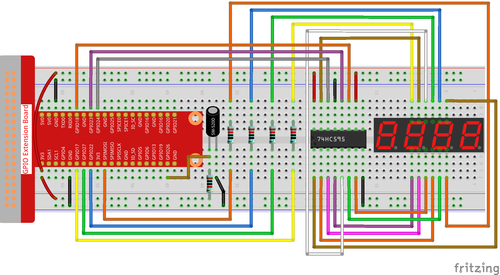

Nota
Ciao e benvenuto nella Community di SunFounder Raspberry Pi & Arduino & ESP32 Enthusiasts su Facebook! Approfondisci l’uso di Raspberry Pi, Arduino e ESP32 insieme ad altri appassionati.
Perché unirti a noi?
Supporto Tecnico: Risolvi problemi post-vendita e sfide tecniche con l’aiuto della nostra community e del nostro team.
Apprendimento e Condivisione: Scambia consigli e tutorial per migliorare le tue competenze.
Anteprime Esclusive: Ottieni accesso anticipato agli annunci dei nuovi prodotti.
Sconti Speciali: Approfitta di sconti esclusivi sui nostri prodotti più recenti.
Promozioni Festive e Giveaway: Partecipa a omaggi e promozioni speciali.
👉 Pronto a esplorare e creare con noi? Clicca su [Qui] e unisciti oggi!
3.1.13 GIOCO– 10 Secondi
Introduzione
Ora realizzeremo un dispositivo di gioco per mettere alla prova la tua concentrazione. Fissa un interruttore a inclinazione su un bastoncino per creare una bacchetta magica. Agita la bacchetta e il display a 4 cifre inizierà a contare; agitala di nuovo per fermare il conteggio. Se riesci a fermarlo esattamente su 10.00, vinci! Puoi sfidare i tuoi amici per scoprire chi è il «mago del tempo».
Componenti

Schema del Circuito
T-Board Name |
physical |
wiringPi |
BCM |
GPIO17 |
Pin 11 |
0 |
17 |
GPIO27 |
Pin 13 |
2 |
27 |
GPIO22 |
Pin 15 |
3 |
22 |
SPIMOSI |
Pin 19 |
12 |
10 |
GPIO18 |
Pin 12 |
1 |
18 |
GPIO23 |
Pin 16 |
4 |
23 |
GPIO24 |
Pin 18 |
5 |
24 |
GPIO26 |
Pin 37 |
25 |
26 |
Procedure Sperimentali
Passo 1: Costruisci il circuito.
{kind=link}
Per gli Utenti del Linguaggio C
Passo 2: Vai alla cartella del codice.
cd ~/davinci-kit-for-raspberry-pi/c/3.1.13/
Passo 3: Compila il codice.
gcc 3.1.13_GAME_10Second.c -lwiringPi
Passo 4: Esegui il file compilato.
sudo ./a.out
Agita la bacchetta per avviare il conteggio sul display a 4 cifre; agitandola di nuovo, il conteggio si fermerà . Se riesci a fermare il conteggio su 10.00, vinci! Agitala nuovamente per iniziare un nuovo round di gioco.
Nota
Se il programma non funziona dopo l’esecuzione o appare un errore: "wiringPi.h: Nessun file o directory», fai riferimento a Il codice C non funziona?.
Spiegazione del Codice
void stateChange(){
    if (gameState == 0){
        counter = 0;
delay(1000);
ualarm(10000,10000);
    }else{
alarm(0);
delay(1000);
}
    gameState = (gameState + 1)%2;
}
Il gioco è suddiviso in due modalità :
gameState=0 è la modalità «start», in cui il tempo viene conteggiato e mostrato sul display a segmenti; scuotendo l’interruttore inclinabile si entra nella modalità «show».
gameState=1 è la modalità «show», in cui il conteggio si ferma e il tempo viene visualizzato sul display. Scuotendo di nuovo l’interruttore inclinabile, il timer si resetta e il gioco ricomincia.
void loop(){
    int currentState =0;
    int lastState=0;
while(1){
display();
        currentState=digitalRead(sensorPin);
if((currentState==0)&&(lastState==1)){
stateChange();
}
        lastState=currentState;
}
}
Loop() è la funzione principale. Prima, il tempo viene visualizzato sul display a 4 cifre, e si legge il valore dell’interruttore inclinabile. Se lo stato dell’interruttore inclinabile cambia, viene chiamata la funzione stateChange().
Per Utenti di Linguaggio Python
Passo 2: Vai alla cartella del codice.
cd ~/davinci-kit-for-raspberry-pi/python/
Passo 3: Esegui il file eseguibile.
sudo python3 3.1.13_GAME_10Second.py
Agita la bacchetta e il display a 4 cifre inizierà a contare; agitala di nuovo per fermare il conteggio. Se riesci a fermare il conteggio su 10.00, vinci! Agitala ancora una volta per avviare un nuovo round del gioco.
Codice
Nota
Puoi Modificare/Reimpostare/Copiare/Eseguire/Interrompere il codice qui sotto. Prima di farlo, però, è necessario trovarsi nel percorso di origine del codice come davinci-kit-for-raspberry-pi/python.
import RPi.GPIO as GPIO
import time
import threading
sensorPin = 26
SDI = 24
RCLK = 23
SRCLK = 18
placePin = (10, 22, 27, 17)
number = (0xc0, 0xf9, 0xa4, 0xb0, 0x99, 0x92, 0x82, 0xf8, 0x80, 0x90)
counter = 0
timer =0
gameState =0
def clearDisplay():
for i in range(8):
GPIO.output(SDI, 1)
GPIO.output(SRCLK, GPIO.HIGH)
GPIO.output(SRCLK, GPIO.LOW)
GPIO.output(RCLK, GPIO.HIGH)
GPIO.output(RCLK, GPIO.LOW)
def hc595_shift(data):
for i in range(8):
GPIO.output(SDI, 0x80 & (data << i))
GPIO.output(SRCLK, GPIO.HIGH)
GPIO.output(SRCLK, GPIO.LOW)
GPIO.output(RCLK, GPIO.HIGH)
GPIO.output(RCLK, GPIO.LOW)
def pickDigit(digit):
for i in placePin:
GPIO.output(i,GPIO.LOW)
GPIO.output(placePin[digit], GPIO.HIGH)
def display():
global counter
clearDisplay()
pickDigit(0)
hc595_shift(number[counter % 10])
clearDisplay()
pickDigit(1)
hc595_shift(number[counter % 100//10])
clearDisplay()
pickDigit(2)
hc595_shift(number[counter % 1000//100]-0x80)
clearDisplay()
pickDigit(3)
hc595_shift(number[counter % 10000//1000])
def stateChange():
global gameState
global counter
global timer1
if gameState == 0:
counter = 0
time.sleep(1)
timer()
elif gameState ==1:
timer1.cancel()
time.sleep(1)
gameState = (gameState+1)%2
def loop():
global counter
currentState = 0
lastState = 0
while True:
display()
currentState=GPIO.input(sensorPin)
if (currentState == 0) and (lastState == 1):
stateChange()
lastState=currentState
def timer():
global counter
global timer1
timer1 = threading.Timer(0.01, timer)
timer1.start()
counter += 1
def setup():
GPIO.setmode(GPIO.BCM)
GPIO.setup(SDI, GPIO.OUT)
GPIO.setup(RCLK, GPIO.OUT)
GPIO.setup(SRCLK, GPIO.OUT)
for i in placePin:
GPIO.setup(i, GPIO.OUT)
GPIO.setup(sensorPin, GPIO.IN)
def destroy(): # Quando viene premuto "Ctrl+C", la funzione viene eseguita.
GPIO.cleanup()
global timer1
timer1.cancel()
if __name__ == '__main__': # Inizio del programma
setup()
try:
loop()
except KeyboardInterrupt:
destroy()
Spiegazione del Codice
def stateChange():
    global gameState
    global counter
    global timer1
    if gameState == 0:
        counter = 0
time.sleep(1)
timer()
    elif gameState ==1:
timer1.cancel()
time.sleep(1)
    gameState = (gameState+1)%2
Il gioco è diviso in due modalità :
gameState=0 è la modalità «start», in cui viene avviato il conteggio del tempo e visualizzato sul display a segmenti, e il movimento dell’interruttore a inclinazione consente di entrare nella modalità «show».
gameState=1 è la modalità «show», che ferma il conteggio e visualizza il tempo sul display a segmenti. Scuotendo nuovamente l’interruttore a inclinazione, il timer si resetta e il gioco ricomincia.
def loop():
    global counter
    currentState = 0
    lastState = 0
    while True:
display()
        currentState=GPIO.input(sensorPin)
        if (currentState == 0) and (lastState == 1):
stateChange()
        lastState=currentState
Loop() è la funzione principale. Prima, il tempo viene visualizzato sul display a 4 cifre e si legge il valore dell’interruttore a inclinazione. Se lo stato dell’interruttore cambia, viene chiamata la funzione stateChange().
def timer():
global counter
global timer1
timer1 = threading.Timer(0.01, timer)
timer1.start()
counter += 1
Dopo che l’intervallo raggiunge 0,01s, viene chiamata la funzione timer; aggiunge 1 a counter e riutilizza il timer per eseguire se stessa ripetutamente ogni 0,01s.